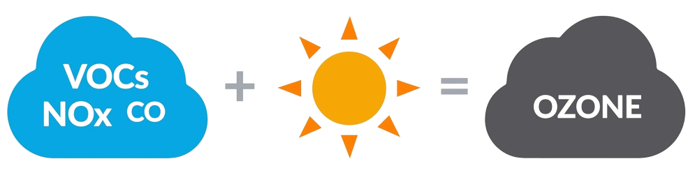

What is Ozone?
Ozone (O3) is a gas molecule composed of three oxygen atoms. Ozone is good up high, bad nearby. The ozone layer found high in the upper atmosphere shields us from much of the sun's ultraviolet radiation. However, ozone air pollution at ground level where we can breathe it causes serious health problems. Ozone aggressively attacks lung tissue by reacting chemically with it.
Where Does Ozone Come From?
Ground-level ozone develops in the atmosphere from gases that come out of tailpipes, smokestacks, factories and many other pollution sources. When these gases come in map with sunlight, they react and form ozone smog. The essential raw ingredients needed to form ozone are nitrogen oxides (NOx), volatile organic compounds (VOCs), and sunlight. NOx and VOCs are precursor gases that react in the air in the presence of sunlight to produce ozone. NOx is produced primarily when fossil fuels like gasoline, oil or coal are burned such as in power plants, motor vehicles, furnaces and other sources of high-heat combustion. VOCs are released into the air from some common consumer products like paint and when household chemicals like paint thinners and solvents evaporate. VOCs are also emitted from motor vehicles, chemical plants, refineries, factories, and gas stations. If these precursor gases are present under the right conditions, they react to form ozone. Because the reaction takes place in the atmosphere, ozone is transported by wind and often shows up downwind and even across international borders and oceans, far from the sources of these gases.  You may have wondered why "ozone action day" warnings are sometimes followed by recommendations to avoid activities such as mowing your lawn or driving your car. Lawn mower exhaust and gasoline vapors produce NOx and VOCs which are precursor gases that are responsible in forming ozone in the presence of heat and sunlight. High levels of ozone are more likely to form in warmer temperatures, which is why harmful ozone levels primarily occur in the summer in most of the U.S. Because climate change is driving warmer temperatures, it’s also leading to increased levels of ozone in many places.
Who Is at Risk from Breathing Ozone?
Anyone who spends time outdoors where ozone pollution levels are high may be at risk. The impact of ozone exposure on your health can depend on many factors. For example, the risks are greater if ozone levels are higher, if you are breathing faster because you're working or exercising outdoors or if you spend more time outdoors. The impact of even short-term exposure to ozone pollution on healthy adults was demonstrated in a study of lifeguards in Galveston which showed greater obstruction of their airways at the end of the day when ozone levels were high. Some groups of people are especially vulnerable to the effects of breathing ozone, such as:
- Individuals who are pregnant;
- children and teens;
- anyone 65 and older;
- people with some pre-existing medical conditions including lung diseases (e.g. asthma), metabolic disorders (e.g. obesity)
- People of lower socioeconomic status
- people who work or exercise outdoors.
In addition, some evidence suggests that women may face higher respiratory health risk from ozone. The impact of ozone exposure on your health can depend on many factors. For example, the risks are greater if ozone levels are higher, if you are breathing faster because you're working or exercising outdoors or if you spend more time outdoors.
How Ozone Pollution Harms Your Health
Ozone exposure can cause premature death when combined with other risk factors. Breathing ozone can shorten your life if you are among the higher risk groups. Strong evidence exists of the deadly impact of ozone from large studies conducted in cities across the U.S., in Europe and in Asia. Researchers repeatedly found that the risk of premature death increased with higher levels of ozone. Newer research has confirmed that ozone increased the risk of premature death even when other pollutants also are present.
Immediate breathing problems. Many areas in the United States produce enough ozone during the summer months to cause health problems that can be felt right away. Immediate problems—in addition to increased risk of premature death—include:
- shortness of breath, wheezing and coughing;
- asthma attacks;
- increased risk of respiratory infections;
- increased susceptibility to pulmonary inflammation; and
- increased need for people with lung diseases, like asthma or chronic obstructive pulmonary disease (COPD), to receive medical treatment and to go to the hospital.
Long-term exposure risks. Scientific studies warn of serious health effects from breathing ozone over long periods —that is, for periods longer than eight hours, including days, months or years. Long-term ozone exposure is associated with increased respiratory illnesses, metabolic disorders, nervous system issues, reproductive issues (including reduced male and female fertility and poor birth outcomes), cancer and also increased cardiovascular mortality, which is the main driver of total mortality.
Breathing in other pollutants in the air may make your lungs more responsive to ozone—and breathing ozone may increase your body's response to other pollutants. For example, research warns that breathing sulfur dioxide and nitrogen oxide can make the lungs react more strongly than just breathing ozone alone. Breathing ozone may also increase the response to allergens in people with allergies. Research shows lower levels of ozone can also cause harm. The official national limit on ozone, also called the National Ambient Air Quality Standard, was last strengthened by EPA in 2015. However, newer research shows that ozone can cause serious harm even at much lower levels. For example, in a 2017 study showed that older adults faced a higher risk of premature death even when levels of ozone pollution remained well below the current national standard.
What Can We Do about it?
The good news is that for much of the nation, the outdoor air has lower levels of ozone now than in previous decades. Under the federal Clean Air Act, more protective standards nationwide have helped drive down the emissions that contribute to ozone formation. Power plants, industrial sites and on-road vehicles are cleaner than they used to be, which has driven nationwide improvement in air quality. However, far too many people still breathe in unhealthy levels of ozone, and warmer temperatures due to climate change make unhealthy ozone days more likely. Individuals can take steps to protect themselves on days with unhealthy levels of air pollutants and also ask policymakers at all levels of government to continue to require cleanup of air pollution.